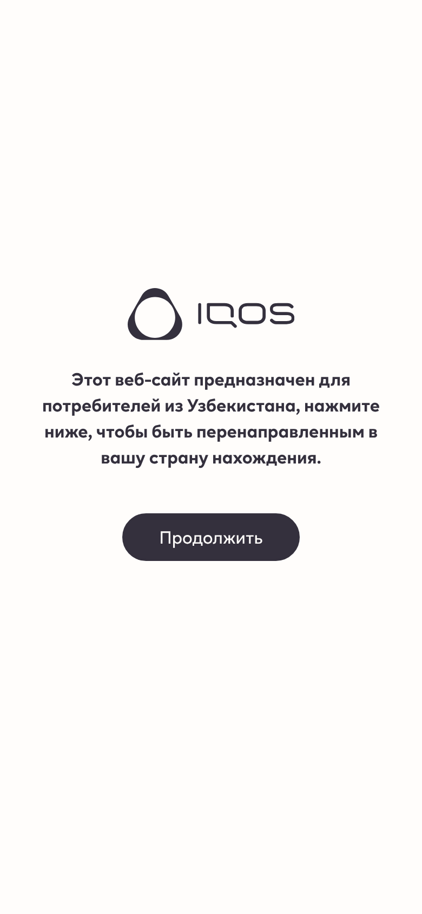
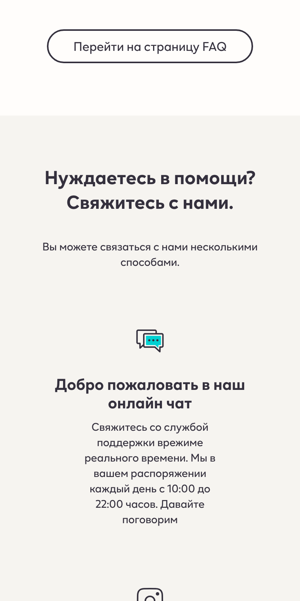
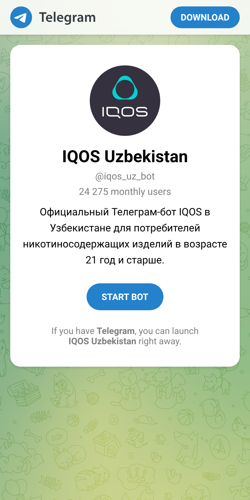
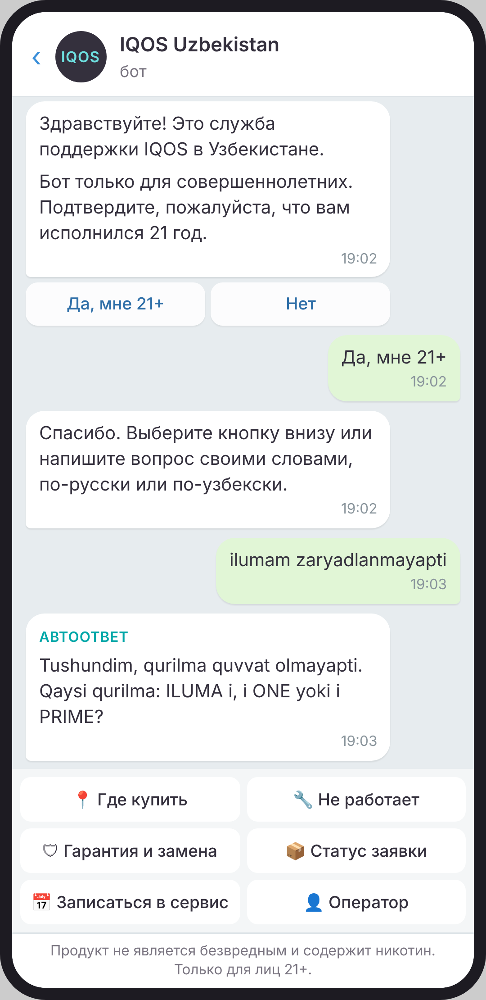
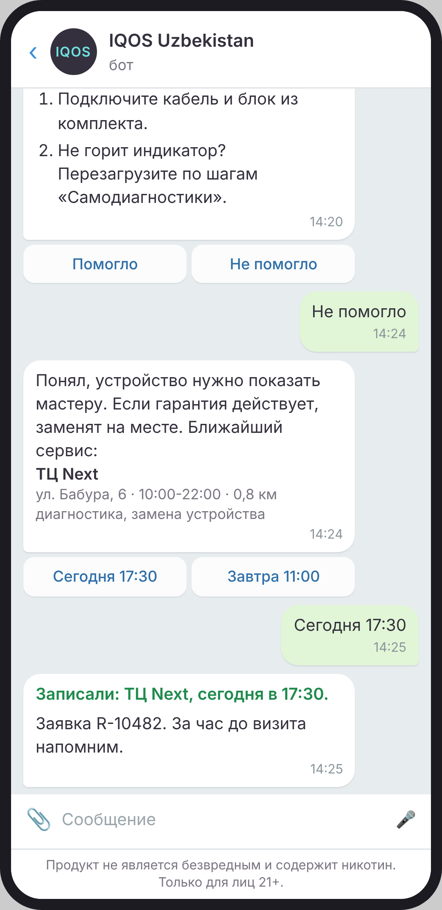
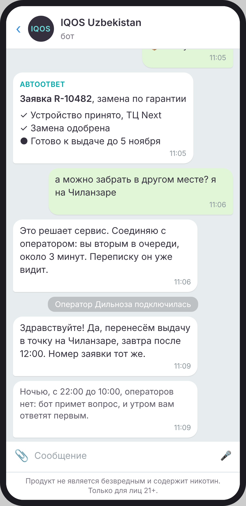
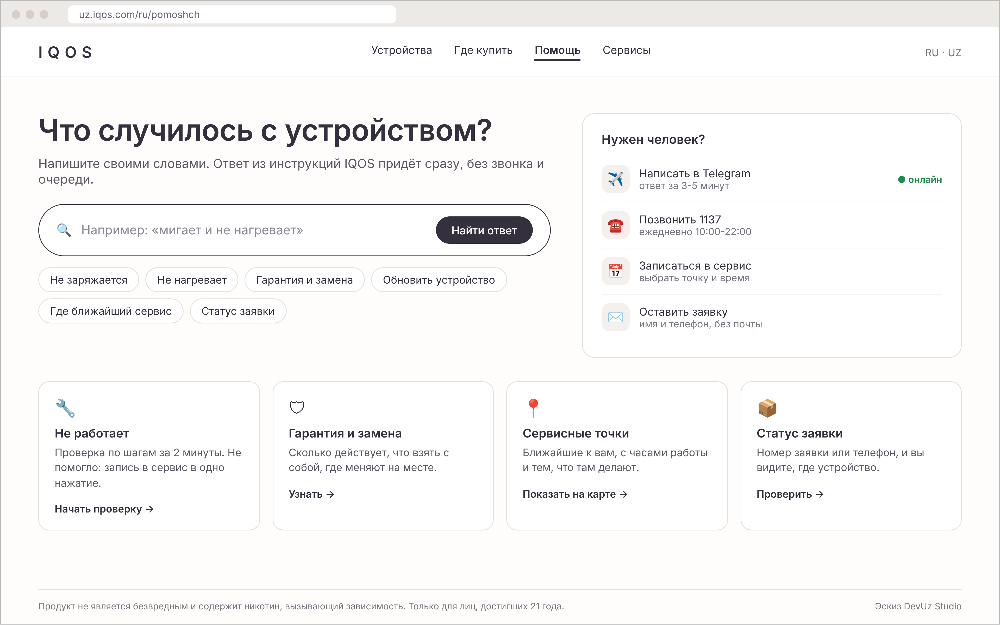
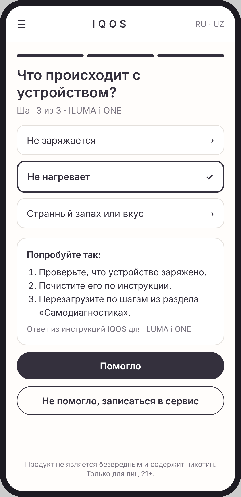
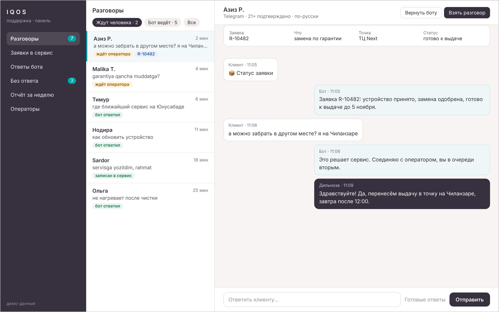

коммерческое предложение DevUz Studio
Исправить сайт uz.iqos.com и Telegram-бот @iqos_uz_bot так, чтобы человек с вопросом об устройстве быстро получал ответ: где купить, что делать, если не заряжается, как заменить по гарантии, где его заявка. И узнать цену и сроки.
Сайт целиком не переписываем: он на общей платформе IQOS (почему так, на странице 3). Никакой рекламы: только помощь владельцам устройств, проверка 21+ и предупреждения на каждом экране.
| Вариант | Что входит | Срок | Цена |
|---|---|---|---|
| Бот | Бот поддержки с автоответами, записью в сервис, оператором и панелью | 5 недель | 1 800 $ |
| Бот и страница · советуем | Всё из «Бота» и страница «Помощь» для сайта | 6-7 недель | 2 800 $ |
| Всё вместе | «Бот и страница», связь с вашей системой заявок, бот понимает голосовые | 8 недель | 3 700 $ |
Открыли сайт 29 октября 2026 года как покупатель, с телефона и компьютера, не из Узбекистана: что зависит от страны, отмечено «проверить». Бота смотрели только по его странице в Telegram, писать в него не стали.

Посетитель не из Узбекистана видит экран «Этот веб-сайт предназначен для потребителей из Узбекистана» и одну кнопку «Продолжить». Мы нажали, и нас унесло на iqos.com, на сайт США. В Ташкенте многие с VPN, и для сайта они «не из Узбекистана»: искал адрес сервиса, попал на чужой сайт. Нужна кнопка «Я в Узбекистане».

На странице «Служба поддержки» блок «Добро пожаловать в наш онлайн чат… Давайте поговорим», но кнопки нет, и нажатие на текст ничего не открывает. Окна чата на странице мы не нашли. Проверить: возможно, чат включается только для посетителей из Узбекистана.
Там же опечатки, которые видит каждый: «врежиме», «любыеВаши», «васнапрямую», «задавалираньше»; на главной «лимтированную серию».

Ботом пользуются 24 275 человек в месяц (так пишет Telegram), это большая аудитория. Но на сайте он подписан «Подпишитесь на наш Telegram-бот. Оставайтесь в курсе последних новостей»: человек, у которого не заряжается устройство, не поймёт, что там помогут. По вашим словам, бот сейчас почти не отвечает. Сами мы этого не проверяли.
uz.iqos.com работает на общей платформе IQOS: код и картинки идут с серверов внешнего подрядчика (в коде страниц видно сервис Bylith), внизу каждой страницы «© Philip Morris Sales and Distribution». По опыту таких сайтов, местная команда правит в панели тексты, новости и адреса, а новые разделы, кнопки и чат ставит подрядчик после согласования с глобальной командой. Как устроено у вас, вы знаете точнее: поправьте нас, если иначе.
Поэтому «перепишем весь сайт» не предлагаем. Это долго, дорого и, скорее всего, не разрешат. Делаем то, что в ваших руках.
| Что | Как сделаем | От кого зависит |
|---|---|---|
| Бот поддержки | Полностью новый бот на вашем же имени @iqos_uz_bot: подписчики остаются. Делаем, ставим, учим ваших операторов. | Только от вас и нас |
| Страница «Помощь» | Делаем готовой и отдаём подрядчику сайта для вставки, как раздел uz.iqos.com. Если вставить не разрешат: та же страница открывается внутри бота кнопкой (мини-приложение Telegram), и на сайте нужна только ссылка. | Подрядчик сайта или только мы |
| Правки сайта | Список с экранами: кнопка «Я в Узбекистане» на заставке, рабочая кнопка чата или ссылка на бота, подпись бота «Помощь 10:00-22:00», форма без обязательной почты, опечатки. Тексты поправите сами в панели, остальное передадите подрядчику. | Ваша команда и подрядчик сайта |
Ответы берём только из ваших материалов: раздел «Самодиагностика», «Гарантия и замена», «Часто задаваемые вопросы», список точек. Модель ИИ ничего не придумывает: нет ответа в базе, вопрос уходит оператору.
Нарисовали сами, по вашим разделам и списку точек. Данные в переписке для примера.




Страница «Помощь» на компьютере. Человек пишет, что случилось, своими словами, и сразу видит ответ. Справа все способы связи: Telegram с отметкой «онлайн», телефон 1137, запись в сервис, заявка без почты.


Цены средние для студий Ташкента, в долларах, счёт в сумах по курсу ЦБ. База и любые допы отдельной строкой, допы можно взять и после запуска.
| Что | Цена |
|---|---|
| Бот поддержки: проверка 21+, русский и узбекский, автоответы по вашей базе, «не работает» по шагам, ближайшие точки по геолокации, запись в сервис с напоминанием, статус заявки, созданной в боте, передача оператору, панель операторов, недельный отчёт, наполнение ответами из ваших материалов, обучение операторов | 1 800 $ |
| Допы | |
| Страница «Помощь» для сайта: поиск ответов своими словами, помощник «Не работает», способы связи. Готовый блок для подрядчика сайта или мини-приложение внутри бота | 1 000 $ |
| Связь с вашей системой заявок (CRM или учёт сервисных точек): статус заявки и замены, созданных не в боте, а в точке или по телефону 1137. Нужен доступ к системе от её владельца | 600 $ |
| Голосовые сообщения: бот понимает голосовое по-русски и по-узбекски и отвечает текстом | 300 $ |
| Сервисные напоминания тем, кто сам согласился: «заявка готова», «пора почистить устройство». Только служебные, без рекламы, тексты согласует ваш юрист | 300 $ |
| Сопровождение после запуска: новые ответы по списку «без ответа», правки, отчёт за месяц | 150 $ / мес |
| Список правок сайта для подрядчика с экранами и готовыми текстами | в подарок |
| Неделя 1 | Собираем ответы из ваших материалов и 100-200 настоящих вопросов от ваших операторов, рисуем сценарии, отдаём тексты вашему юристу. |
| Недели 2-3 | Делаем бота и панель, ставим на тестовый адрес. Ваша команда пишет в него и смотрит. |
| Неделя 4 | Прогоняем бота по настоящим вопросам, правим ответы, учим операторов в панели. |
| Неделя 5 | Запуск на @iqos_uz_bot, неделю смотрим каждый разговор и дописываем ответы. |
Страница «Помощь» добавляет 1-2 недели, связь с системой заявок ещё неделю. Срок считается от аванса и получения материалов; согласование текстов у вашего юриста и в глобальной команде в него не входит.
| Что | Сколько |
|---|---|
| Модель ИИ для автоответов (недорогая модель, платим за каждый ответ). Разговор из 3-5 сообщений стоит около 1-3 центов | ≈ 30-90 $ / мес при 3 000 разговоров |
| Сервер для бота, панели и базы ответов. Лучше в Узбекистане: персональные данные граждан по закону хранят на серверах в стране | ≈ 30-60 $ / мес |
| Telegram | бесплатно |
| Система заявок, если для допа «Связь» нужна платная | по тарифу её поставщика |
Если пользователей станет больше, растёт только строка «модель ИИ», примерно пропорционально числу разговоров. Счета поставщики выставляют вам напрямую, мы ничего не перепродаём.
Это прописано в его правилах, а не оставлено на усмотрение модели.